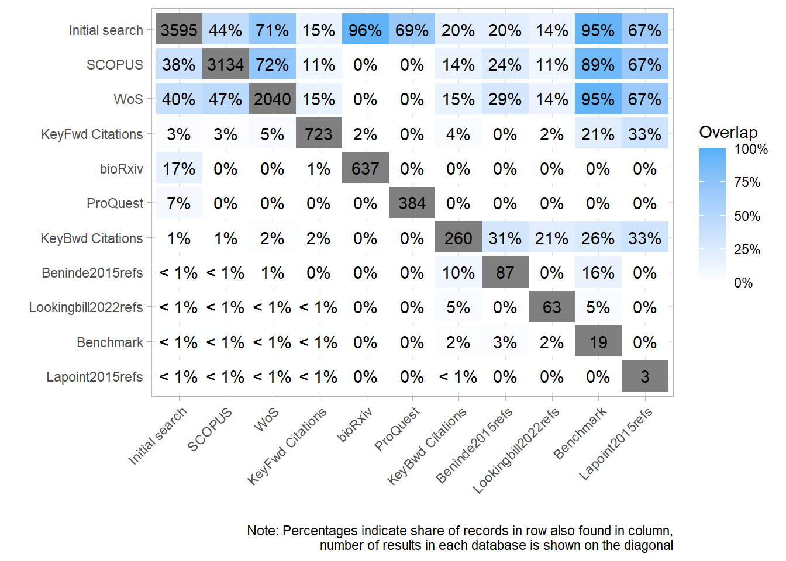
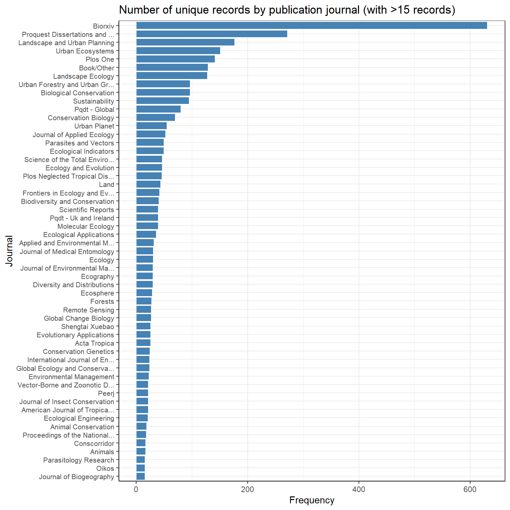
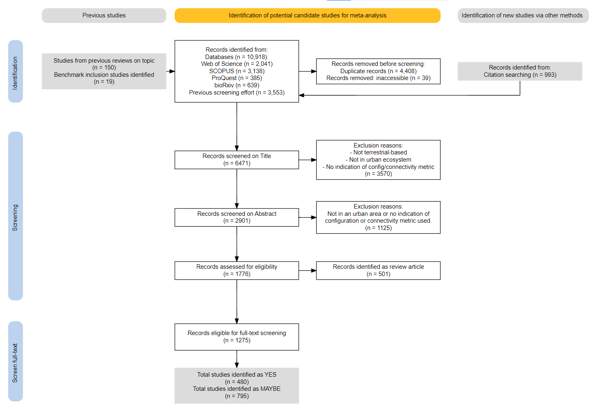
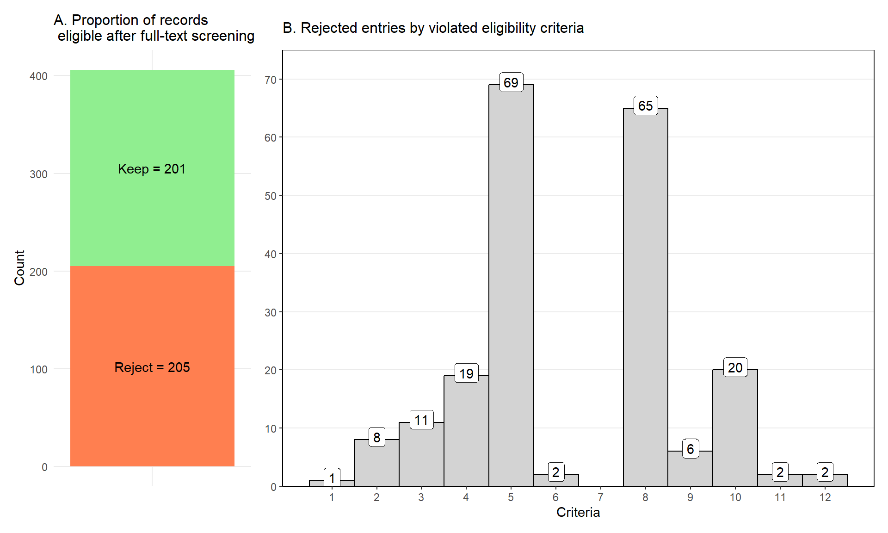
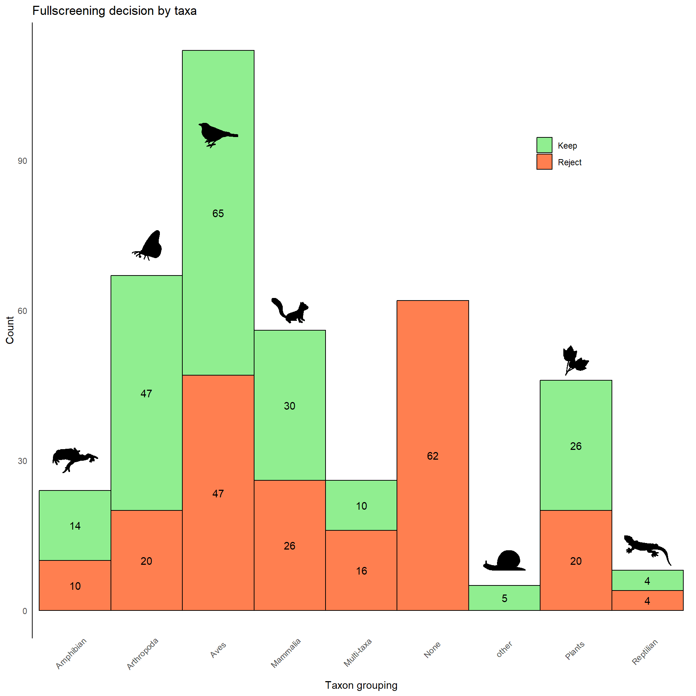
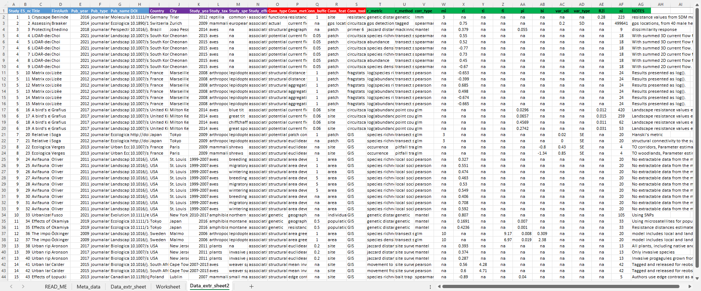

Ch. 2 Meta-analysis
The following R packages (and their versions) were used to generate this report.
## kableExtra sf mapview patchwork rphylopic synthesisr CiteSource
## "1.3.4" "1.0-14" "2.11.2" "1.1.3" "1.2.2" "0.3.0" "0.0.1"
## lubridate forcats stringr dplyr purrr readr tidyr
## "1.9.3" "1.0.0" "1.5.0" "1.1.3" "1.0.2" "2.1.4" "1.3.0"
## tibble ggplot2 tidyverse
## "3.2.1" "3.4.4" "2.0.0"Missed connections in the city: A meta-analysis of landscape connectivity factors affecting biodiversity in urban ecosystems
With the ongoing and expanding use of connectivity metrics in conservation planning, there is considerable value in disentangling the true effect of connectivity on biodiversity from methodological and statistical artifacts to inform sustainable urban development. I intend to review the urban connectivity literature to answer the following research questions:
- What is the overall direction and magnitude of its effect on urban biodiversity?
- What variation/heterogeneity among studies can be explained by biological factors (taxonomy, life history traits etc.) and anthropogenic factors (geographic location, city size, human population density, etc.)
- To what extent have urban connectivity models been validated with independently obtained biological data in cities?
- How does the theoretical approach/connectivity metric used depend on the taxa studied or spatial scale, and does it affect the overall direction/magnitude of the effect?
2.1 Methods
2.1.1 Search strategy
I used an intial set of search terms that encapsulate the three main concepts of the review: (1) urban environments, (2) connectivity types, (3) biodiversity outcomes.
| Concept | Search string |
|---|---|
| Urban environments | urban OR “urban area” OR ”urban landscape*” OR city OR cities OR town* |
| Connectivity concepts/types | connectivity OR “landscape connectivity” OR “functional connectivity” OR “structural connectivity” OR “habitat connectivity” OR “ecological connectivity” OR “habitat network” OR ”ecological network” OR corridor* OR “habitat corridor” OR ”ecological corridor” OR least-cost OR “least cost” OR “circuit theory” OR circuit-theory OR “landscape resistance*” OR “landscape permeability” |
| Biodiversity outcome | occup* OR occurr* OR abundan* OR “species richness” OR diversity OR “speci* response” OR ”gene diversity” OR “gene flow” OR “speci* distribut” OR “speci densit” OR “speci composit” OR “speci assemblage” OR “communit composit” OR “communit assemblage” OR “popul persist” OR “popul response” OR “distribut pattern” OR “spatial distribut” OR movement OR dispersal |
A preliminary search was then conducted on Jan. 25th 2023 using the search strings in the Web of Science Core Collection. The search results were downloaded as [.bib] or [.ris] files, depending on availability. From my original literature review and this initial search, I identified a set of articles that captured all three relevant concepts. Next, using a keyword co-occurrence networks I used the search results to find additional search terms to improve the comprehensiveness of the search, using the ‘litsearchr’ package in R (Grames et al. 2019).
After identifying a set of final search strings, I searched databases on Apr. 3rd 2023 for both primary peer-reviewed literature (Web of Science Core Collection, SCOPUS) and unreviewed grey literature (bioRxiv, ProQuest, and ConservationCorridor.org), adjusting the search syntax to the specific databases accordingly. Searches were restricted to records in English, though this search limitation may miss regional studies, especially localized reports, but I tried to limit this bias by conducting forward and backward citation searches of key review articles on the topic of urban connectivity using the ‘citationchaser’ package in R (Haddaway, Grainger, and Gray 2021).
2.2 Screening process
Results from the database searches were downloaded and imported into R to merge and de-duplicate records using the revtools package (Westgate 2019), which can flag potential duplicates based on DOI, title, and abstract similarity.
The resulting deduplicated records were then screened systematically at two stages, firstly on the titles/abstracts and secondly on full-text.
2.2.1 Eligibility criteria
For the first Title/Abstract stage I used the following criteria:
| Criteria | Description |
|---|---|
| 1 | Does the study mention that the research was conducted in a specific city or urban area, or was studying the effects of urbanization? |
| 2 | Does the study explicitely mention connectivity or describe a predictor variable that could be interpreted as a metric of landscape connectivity or configuration? |
| 3 | Does the study measure some estimate of biodiversity (e.g., species richness, index of diversity etc.), abundance (e.g., direct counts of number of individuals), or direct observation (radio-tracking or GPS, genetic diversity, species presence/absence) as the response variable? |
| 4 | Is the focal taxa/species terrestrial for some part of their life cycle (includes amphibians but exclude aquatic species e.g., fish)? |
Records retained from the title/abstract screening were imported to Zotero to download and manage full-text articles as .pdf files. Depending on institutional access, Zotero (with a plug-in) can automatically bulk download hundreds of articles based on DOI, facilitating management of full texts during the screening efforts.
The full-text screening is documented in an excel spreadsheet with information on the city/urban area, the biodiversity metric(s) used as a response, and the connectivity metric(s) used, with indication of which the specific eligibility criteria that ineligible records violated.
| Criteria | Description |
|---|---|
| 1 | PDF is inaccessible, through library or other online extraction |
| 2 | Document is not in english/Unreliable translation |
| 3 | No part of the study is in an ‘urban area’ |
| 4 | Only PART of the study is in an ‘urban area’, not the main focus of the study |
| 5 | No landscape configurational or connectivity metric is used as an explanatory variable |
| 6 | The response variable is not related to diversity, abundance, movement, or health of biological organisms |
| 7 | The focal taxa is not terrestrial for at least a part of its life cycle |
| 8 | Biological information is not used as a response or to validate the the connectivity model |
| 9 | No ‘case study’ or example given, if the paper was a framework/review/methodology/simulation |
| 10 | Study reports no relevant extractable information for our study |
| 11 | Unclear or missing data; Authors need to be contacted |
| 12 | Review paper, browse citations for additional relevant information/articles |
2.3 Initial results
Searching multiple databases yielded a more comprehensive search, as shown in the figure below. The overlap of unique records between two major literature databases, Web of Science (WoS) and SCOPUS, was 47% and 72%, respectively of search results found in the other database. Searching multiple databases is critical for a comprehensive review on the research topic!

Figure 2.1: Percentage overlap of search results across database sources
Expectedly, the most common journals for publication (ignoring BioRxiv) are Landscape and Urban Planning, Urban Ecosystems, PLoS One, and Landscape Ecology.

Figure 2.2: Unique record counts by journal of publication. Journals with <15 records were removed from the plot for visual clarity.
2.3.1 Title/Abstract screening
Here is a PRISMA diagram for the results of the screening based on the titles/abstracts, with information on the number of records obtained from each of the search databases, records from previous reviews on the topic, and additional citations found through citation networks.
After removing duplicates, I screened 6471 records based on the relevance of the title, abstract, and keywords (if available) using the metagear R package (lajeunesse). From these results, I identified 1275 potentially eligible articles for full-review, including 795 flagged as MAYBE and 480 flagged as YES to for full-text screening. for inclusion.

2.3.2 Full-text screening
All of the potentially eligible articles were saved as bibliographic references and imported into Zotero. Most records were downloaded automatically based on their DOI, but some (mostly student theses) were downloaded manually from their respective repositories.
The following results are just for the published articles that I flagged as YES (excluding theses).

Figure 2.3: A: Full-text screening decisions for records identified as YES from the Ti/Ab screening. B: Rejected entries by violated eligibility criteria
For the records rejected at the full-text screening stage, the most common inclusion criteria that were violated were criteria 5 (No landscape configuration/connectivity metric was used as an explanatory variable) and criteria 8 (No biological information was used as a response variable or used to validate the connectivity model) Table 2.2
Research is also not evenly distributed across taxonomic groups, with most work done using birds, arthropods, and mammals as their focal taxa.

Figure 2.4: Full-text screening decisions by focal taxa of each potentially eligible record.
2.4 Interactive map
We can also check which cities the studies were conducted in, and the proportion of the records identified as KEEP/REJECT.
2.5 Data extraction
Despite soft efforts, I could not find reliable automated method of extracting relevant data from the pdfs. Currently, everything is being extracted manually, documented through zotero, using an extraction excel sheet I designed to enter data in a format that can easily be fed into the metafor (Viechtbauer 2010) R package to calculate standardized effect sizes from.

2.6 Next steps:
Finish writing up standardized protocol and submit to Environmental Evidence as a systematic review protocol.
Finish full-screening MAYBEs for eligibility.
Finish extracting relevant information for the rest of eligible papers.
Calculate standardized effect sizes for each relevent effect.
Conduct meta-regression on standardized effect sizes per connectivity metric and biodiversity metric that have a large enough sample size.
Write-up analysis and insights.
Get angry at R and cry a bunch.
Publish meta-analysis.